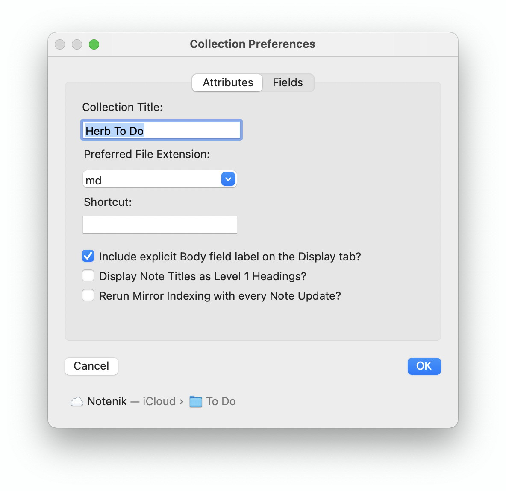
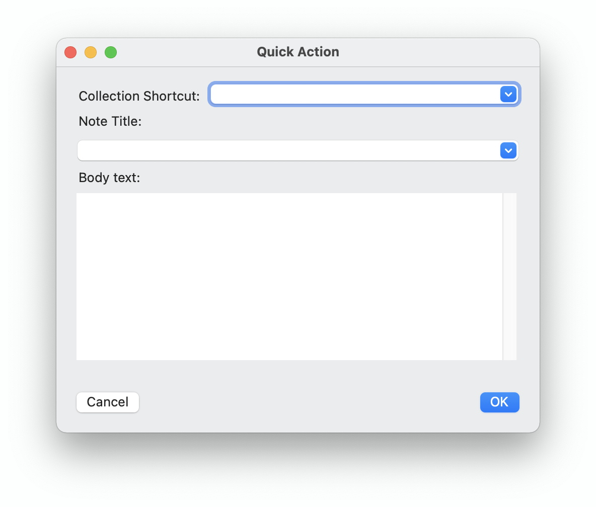

If you’re a serious Notenik user, then you may find yourself with multiple Collections of Notes after a while. You may even find that you have them in multiple locations for various good reasons. For example, my Collections used for generating websites are stored in my Sites folder; Collections I share with my wife are in a special shared iCloud Drive folder; and other Collections are in the iCloud Notenik folder.
Navigating around to all of these Collections in all of these locations can be a bit challenging at times. However, it’s just gotten a bit easier with the introduction of Collection Shortcuts.
Each Collection can be assigned a shortcut in its Collection Preferences window. You can enter any brief, unique identifier for a Collection in this field. Upper-case characters will be converted to lower-case, and any spacing and punctuation will be removed. The idea is to make a shortcut easy and quick to type.

Once you’ve entered some shortcuts, you can make use of them through the new Quick Action menu item, found beneath the Files menu, and easily accessed by pressing Ctrl-Q. This menu item will then bring up the new Quick Action window.

At its most basic, the Quick Action window can be used to open, or to navigate to, a Collection via its shortcut. Just enter the first few letters of a shortcut in the Collection Shortcut field, and then press return when you see your desired shortcut selected. The desired Collection will be opened, if it’s not already, and its window will be moved to the front.
However, if you tab from the Collection Shortcut field, instead of pressing Return, then the desired Collection will be opened, but the Quick Action window will also remain open, with the cursor positioned in the Note Title field. Start typing the first few characters of a Note’s title. When the desired Note title comes up, tab to the next field (or hit return) in order to select that Note within the just-opened Collection.
If you wish to add a new Note, type a complete Title that doesn’t yet exist within the just-opened Collection, then tab to the Body Text field, and enter the desired text for the Note. Press OK when you’re ready, and the new Note will be formatted for you with the Title and Body you have entered. Complete any other entries you wish to make for the Note, then hit the Display tab in order to complete the addition of your new Note.
If you select an existing Note using the Note Title field, and then enter Body Text, then the text you enter will be appended to the body of the indicated Note. Again, hit the Display tab in order to complete your data entry.
And here’s one last trick you can perform with the Quick Action window. If you enter ‘today’ in the Note Title field, then this word will be replaced with today’s date, formatted for year-month-day sorting, and with the day of the week appended to the end. Then enter some useful info about this date in the Body Text field, and press OK. If the Daily Note does not yet exist, it will be added, and the Body Text will become the body of your new Note. If the Note for this date has already been created, then the Body Text you enter will be appended to the body that is already there. All of this can be useful for those wishing to keep a log/journal of their daily activities.
Of course, the usual security/sandboxing restrictions apply. If you haven’t opened a particular Collection recently, and if it’s not located within the iCloud Notenik folder, then you may need to open it normally using other means before you can open it using the Quick Action window.